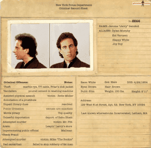

Slickyboy is a lawyer but hates to admit it, a veteran who can't stand yellow ribbon stickers, and a well traveled hack with a reasonably accurate bullshit detector. You can follow his random musings on Twitter.


Disclaimer: This is not legal advice. If you are charged with a criminal offense or think that you may be, contact your attorney.
If you are a Western man under 30, your world view when it comes to sex was forged in the era of internet pornography, epic divorce rates, hyper-sexualized television content and a political climate of anything goes sexual identity, at virtually any age. You could be forgiven for thinking that when you first had sex with your sweetheart back in high school or earlier, it wasn’t something remarkable and you’ve both probably forgotten about it years later. You could also be one accusation away from defending yourself in a sex offense case.
While American culture evolved (or, as many fairly and convincingly argue, DEvolved) into a sexually open environment where there are few if any societal and legal restrictions beyond those involving children and animals, statutory rape is still caught in a complex patchwork of state based laws.
Federal law does not stipulate a universal age of consent, instead leaving it to the states to codify. Though you are safe everywhere in North America by avoiding all girls under 18 and you may think that’s the law of the land, federal statutes principally refer to matters surrounding pornographic material and prostitution. By the way—you didn’t take any naked selfies or make a homemade porno with her, right? Good thing you didn’t because you could have violated that federal law about pornography.
I wouldn’t even trust her (fake) ID.
The age for private consensual sexual acts in America ranges from 16 to 18, sometimes lower in the case of married couples. It’s even lower in some foreign countries. By the way, say you’re an American student overseas with a foreign girlfriend who’s legal in her country, but still under 18—you might want to check with a knowledgable lawyer before getting down a d dirty.
Why is this significant? For starters, the UN Convention on the Rights of the Child considers anyone under the age of 18 to be a child. That magic number is also used to prosecute anyone going overseas with the intent to have sex with a minor. While US law in this area is aimed at pedophiles and traffickers, there’s no reason it could not be applied to a young man on a trip to Cancun or studying abroad in Eastern Europe. The most likely situation for a young American male will be domestic, however.

Don’t take one for the team.
For example, back when you were 18 and your girlfriend was 15 and the age of consent in your state was 16, you might have both been well aware of what you were doing and done it several times—perhaps even with the knowledge and approval of your parents. You may have stayed with her for years and eventually got married, but more than likely you and she parted ways and haven’t looked back since.
Till one day you get a knock at your door from a policeman who wants to question you about your relationship a few years earlier. Thinking nothing of it, you tell him the basic details, admitting to sexual contact, and bam, you are arrested for statutory rape of a minor. Any defense of her consenting multiple times, or even that you did not know she was underage, is irrelevant—as a minor, she cannot consent and because of this she may have no say in whether or not to press charges.

“Well, that’s no bother to me since it was so long ago and the statute of limitations passed anyway, right?” Not so fast. First, if you have amassed any assets years later, she could still decide to sue you in civil court for damages (although this is not always successful) and either win at trial or eke out a monetary settlement from you. Even absent a criminal conviction or a civil court judgement against you, having to pay a settlement for a sex assault related case is something no man wants on his resume—just ask Bill Clinton.
Moreover, just because it is now beyond the statute of limitations for prosecuting you, do not assume you are in the clear. Statutes of limitations can be changed, once again including accused offenders even though they were previously beyond the statute of limitations. Any statements you may have made to law enforcement before this happens would once again be fair game.
While the intent of changes to these laws is noble—they want to nail child abusers who got away for decades—the reality is you can get scooped up into the mix if you as a teenager once had a sexual encounter of any kind with an underage girl, perhaps even if you yourself were underage. If you think you engaged in a situation where you could be charged, the best course of action is to clam up and consult lawyer in your jurisdiction.
This applies even more if one day you are approached by anyone and out of the blue they bring up the subject even though you’d nearly forgotten about it. If you get arrested and charged but the prosecuting attorney decides to not prosecute, continue to keep quiet regardless. Prosecutors come and go, and a replacement with a political agenda could perhaps decide to re-open your case and pursue charges.

If you get charged but by some miracle are able to cop a plea and get probation with no jail time, you will probably still wind up in a sex offender registry, perhaps for life. Say you get luckier still and serious doubts surface about the veracity of the story and eventually the charges are reduced or dropped completely, resulting in no conviction and no sex offender registry requirement for you. Well guess what? You will still have an arrest record for a sex offense on your rap sheet—it matters not that there was no conviction.
Imagine driving down the road years later, a cop drives up behind you and automatically scans your license plate as is now common practice. A sex offense arrest pops up. Think you stand a good chance of getting pulled over for further scrutiny? What are the chances you’re going away with a warning instead of a ticket that day? For better or worse, cop instinct is to view arrests the same as they would a conviction, so it’s best to keep all arrests completely out of your life as much as possible.
Yes, of course, you both “knew what you were doing” back on prom night. And yes, we know grown women teachers who have sex with minors often are convicted at trial and still receive no jail sentences. But you, sir, are a heterosexual man acting out on your urges and therefore a prime target—doubly so if you’re white, non-Islamic and attending college or boarding school, particularly a prestigious institution. Forewarned is forearmed.
Young men need to be well aware of the laws in their state before engaging in any sexual contact in situations where they could face a statutory rape accusation. And if you’ve got a story or two from back in your glory days as the high school quarterback with the freshman cheerleader? Don’t tell that story to anyone. Ever. The political climate is not favorable to you—and it could stay that way for a while absent a much needed reality check.
Read More: 7 Ways The Collapse May Unfold